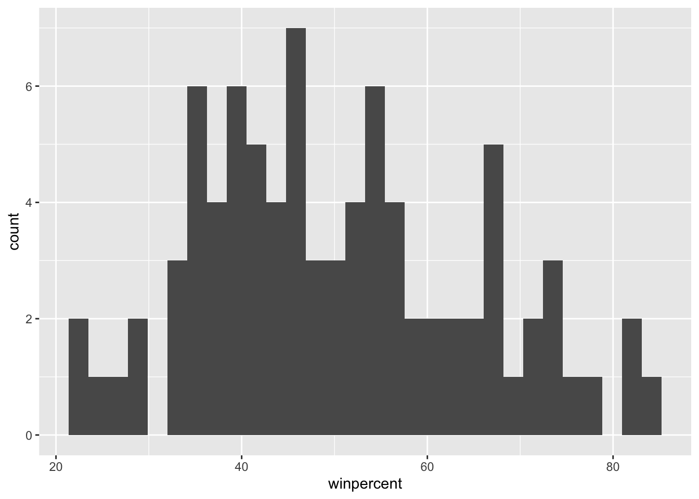
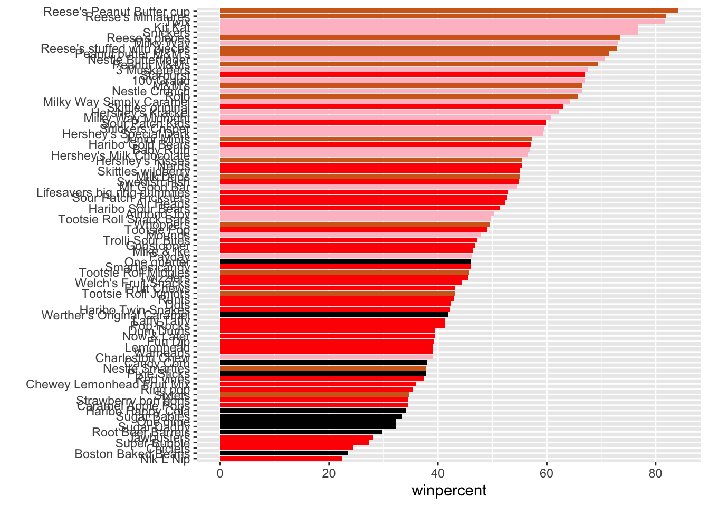
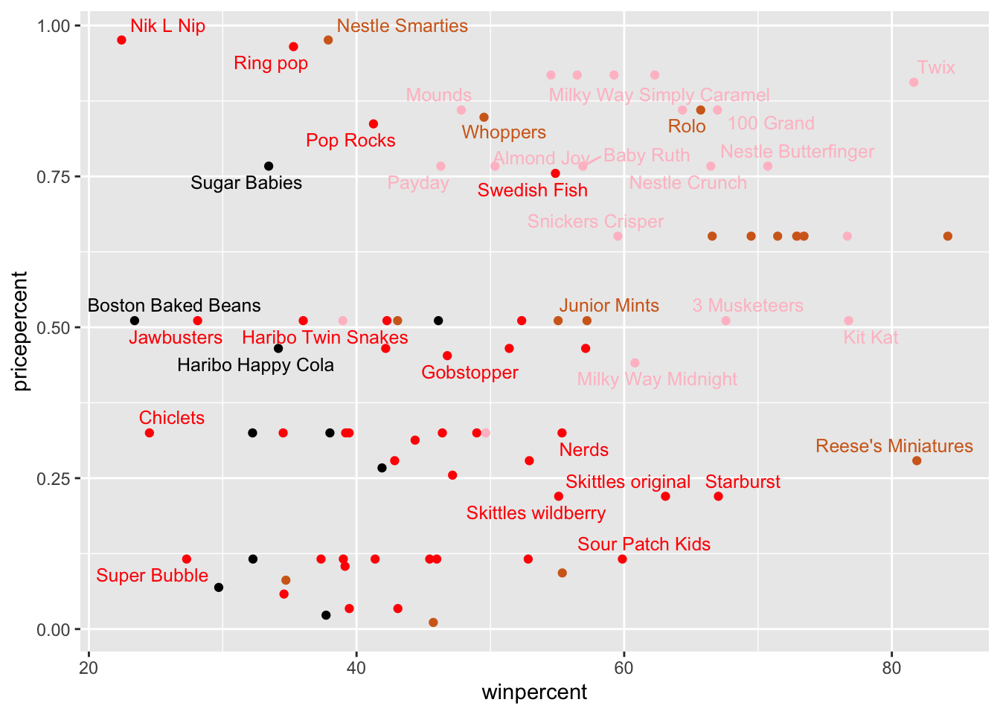
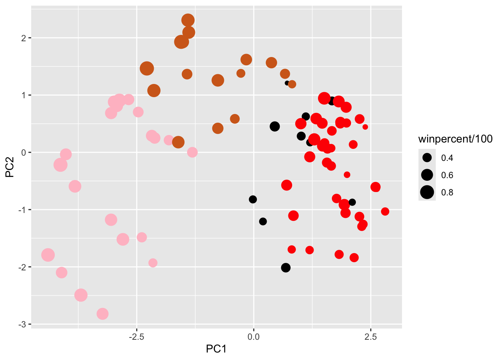
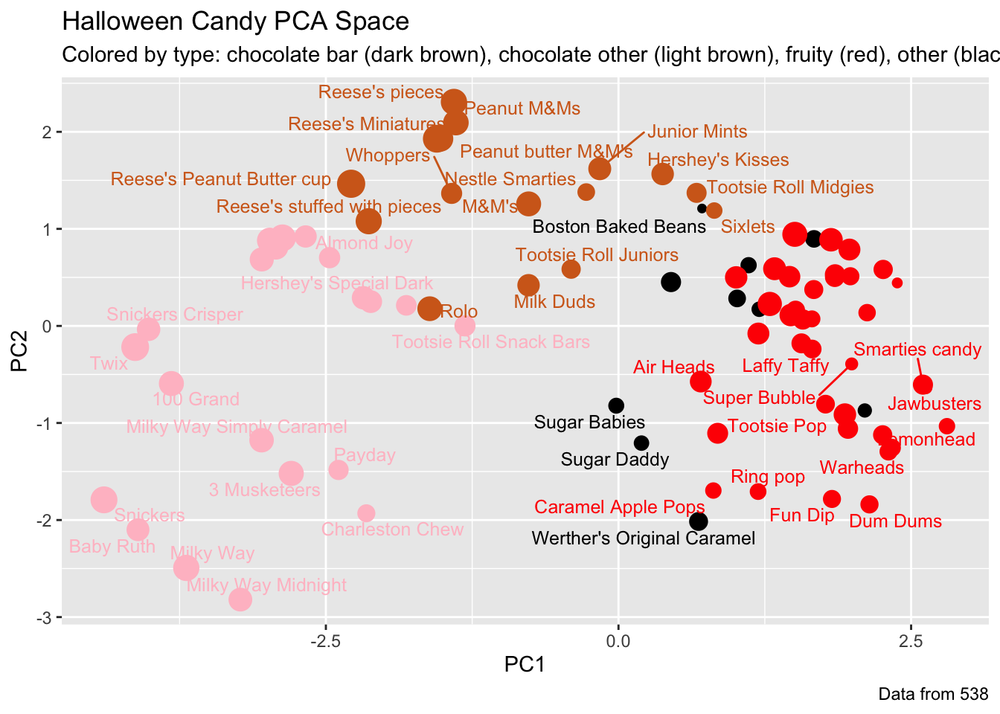

chocolate fruity caramel peanutyalmondy nougat crispedricewafer
100 Grand 1 0 1 0 0 1
3 Musketeers 1 0 0 0 1 0
One dime 0 0 0 0 0 0
One quarter 0 0 0 0 0 0
Air Heads 0 1 0 0 0 0
Almond Joy 1 0 0 1 0 0
hard bar pluribus sugarpercent pricepercent winpercent
100 Grand 0 1 0 0.732 0.860 66.97173
3 Musketeers 0 1 0 0.604 0.511 67.60294
One dime 0 0 0 0.011 0.116 32.26109
One quarter 0 0 0 0.011 0.511 46.11650
Air Heads 0 0 0 0.906 0.511 52.34146
Almond Joy 0 1 0 0.465 0.767 50.34755
What is in this dataset?
Q1. There are 85 kinds of candy in this dataset
dim(candy) # checks dimensions of this dataset to check for rowcount
[1] 85 12
Q2. There are 38 fruity candy types in this dataset
sum(candy$fruity) # sums the values of the fruity column
[1] 38
What is your favorite candy?
library(dplyr) # installs dplyr
Attaching package: 'dplyr'
The following objects are masked from 'package:stats':
filter, lag
The following objects are masked from 'package:base':
intersect, setdiff, setequal, union
candy %>%filter(row.names(candy)=="Twix") %>%# filter function filters for specific outcome select(winpercent) # keeps the target value and reports it
winpercent
Twix 81.64291
Q3. My favorite candy in this dataset is “Air Heads”, its winpercent value is 52.3%
candy %>%filter(row.names(candy)=="Air Heads") %>%# filter function filters for specific outcome select(winpercent) # keeps the target value and reports it
winpercent
Air Heads 52.34146
Q4. The winpercent value of “Kit Kat” is 76.8%
candy %>%filter(row.names(candy)=="Kit Kat") %>%# filter function filters for specific outcome select(winpercent) # keeps the target value and reports it
winpercent
Kit Kat 76.7686
Q5. The winpercent value of “Tootsie Roll Snack Bars” is 49.7%
candy %>%filter(row.names(candy)=="Tootsie Roll Snack Bars") %>%# filter function filters for specific outcome select(winpercent) # keeps the target value and reports it
winpercent
Tootsie Roll Snack Bars 49.6535
skimr::skim() function
library("skimr")skim(candy)
Data summary
Name
candy
Number of rows
85
Number of columns
12
_______________________
Column type frequency:
numeric
12
________________________
Group variables
None
Variable type: numeric
skim_variable
n_missing
complete_rate
mean
sd
p0
p25
p50
p75
p100
hist
chocolate
0
1
0.44
0.50
0.00
0.00
0.00
1.00
1.00
▇▁▁▁▆
fruity
0
1
0.45
0.50
0.00
0.00
0.00
1.00
1.00
▇▁▁▁▆
caramel
0
1
0.16
0.37
0.00
0.00
0.00
0.00
1.00
▇▁▁▁▂
peanutyalmondy
0
1
0.16
0.37
0.00
0.00
0.00
0.00
1.00
▇▁▁▁▂
nougat
0
1
0.08
0.28
0.00
0.00
0.00
0.00
1.00
▇▁▁▁▁
crispedricewafer
0
1
0.08
0.28
0.00
0.00
0.00
0.00
1.00
▇▁▁▁▁
hard
0
1
0.18
0.38
0.00
0.00
0.00
0.00
1.00
▇▁▁▁▂
bar
0
1
0.25
0.43
0.00
0.00
0.00
0.00
1.00
▇▁▁▁▂
pluribus
0
1
0.52
0.50
0.00
0.00
1.00
1.00
1.00
▇▁▁▁▇
sugarpercent
0
1
0.48
0.28
0.01
0.22
0.47
0.73
0.99
▇▇▇▇▆
pricepercent
0
1
0.47
0.29
0.01
0.26
0.47
0.65
0.98
▇▇▇▇▆
winpercent
0
1
50.32
14.71
22.45
39.14
47.83
59.86
84.18
▃▇▆▅▂
Q6. Winpercent is on a distinctly different scale from the other values, which all have means under 1, but winpercent values have a mean of 50.32. But up until pluribus, most of the categories (chocolate, fruity, caramel, peanutyalmondy, nougat, crispedricewafer, hard, bar, pluribus) are all binary values while the others are non-binary. There are two types of scale in question here.
Q7. A 0 represents that the candy is not chocolate, under the candy$chocolate column, and a 1 under that column means that the candy in question is a chocolate.
Exploratory analysis
Q8.
ggplot2 method:
library("ggplot2")ggplot(candy, aes(x = winpercent)) +# loads a ggplotgeom_histogram() #builds a histogram
`stat_bin()` using `bins = 30`. Pick better value `binwidth`.

base R version
hist(candy$winpercent) #builds a histogram of the data loaded
Q9. The distribution of winpercent is not clearly symmetrical, and seems to be skewed with a tail towards the right side.
Q10. The center of the distribution seems to be just above 50%, if considering mean, but if considering median then the center seems to be below 50%. Median is our primary consideration here, however. So the center is below 50%.
median(candy$winpercent) # returns median
[1] 47.82975
mean(candy$winpercent) # returns mean
[1] 50.31676
Q11. The winpercent of chocolate candies is greater than the winpercent of fruity candies.
choc_wp <- candy %>%filter(chocolate ==1) %>%pull(winpercent)#pull method extracts a column as a vector so you don't force a dataframe into mean()fruity_wp <- candy %>%filter(fruity ==1) %>%pull(winpercent)mean(choc_wp)
[1] 60.92153
mean(fruity_wp)
[1] 44.11974
Q12. With a p-value of 2.871e-08, the null hypothesis is rejected and there is a statistically significant difference between chocolate candy and fruity candy winpercentages
t_test_result <-t.test(choc_wp, fruity_wp) #runs a t-test using two vectors to test for statistical significance difference between two groups of datat_test_result
Welch Two Sample t-test
data: choc_wp and fruity_wp
t = 6.2582, df = 68.882, p-value = 2.871e-08
alternative hypothesis: true difference in means is not equal to 0
95 percent confidence interval:
11.44563 22.15795
sample estimates:
mean of x mean of y
60.92153 44.11974
Overall candy rankings
Q13. The all time top 5 least favorite candies are Nik L Nip, Boston Baked Beans, Chiclets, Super Bubble, and Jawbusters with the 5 lowest winpercents
head(candy[order(candy$winpercent),], n=5) #head only takes the top values, which
chocolate fruity caramel peanutyalmondy nougat
Nik L Nip 0 1 0 0 0
Boston Baked Beans 0 0 0 1 0
Chiclets 0 1 0 0 0
Super Bubble 0 1 0 0 0
Jawbusters 0 1 0 0 0
crispedricewafer hard bar pluribus sugarpercent pricepercent
Nik L Nip 0 0 0 1 0.197 0.976
Boston Baked Beans 0 0 0 1 0.313 0.511
Chiclets 0 0 0 1 0.046 0.325
Super Bubble 0 0 0 0 0.162 0.116
Jawbusters 0 1 0 1 0.093 0.511
winpercent
Nik L Nip 22.44534
Boston Baked Beans 23.41782
Chiclets 24.52499
Super Bubble 27.30386
Jawbusters 28.12744
# are the lowest considering it is in ascending order
Q14. The top 5 favorite candies by winpercent are Reese’s Peanut Butter Cup, Reese’s Miniatures, Twix, Kit Kats, and Snickers.
tail(candy[order(candy$winpercent),], n=5) # tails returns the tail instead of
# the head, so it gives the biggest winpercent values
Q15.
ggplot(candy, aes(x = winpercent, y =rownames(candy))) +geom_col()
Q16.
ggplot(candy, aes(x = winpercent, y =reorder(rownames(candy), winpercent))) +geom_col()
# reorder placed here orders the bars by winpercent descending
Adding some useful color
library(ggrepel)my_cols=rep("black", nrow(candy))my_cols[as.logical(candy$chocolate)] ="chocolate"my_cols[as.logical(candy$bar)] ="pink"my_cols[as.logical(candy$fruity)] ="red"# as.logical() provides a vector of row indices that are true or 1ggplot(candy) +aes(winpercent, reorder(rownames(candy),winpercent)) +geom_col(fill=my_cols) +ylab("")# labels the y axis

Q17. The worst ranked chocolate candy is Sixlets
Q18. The best ranked fruity candy is Starburst
Taking a look at pricepercent
library(ggrepel)# How about a plot of win vs priceggplot(candy) +aes(x=winpercent, y=pricepercent, label=rownames(candy)) +geom_point(col=my_cols) +geom_text_repel(col=my_cols, size=3.3, max.overlaps =5) # repel allows names to not

#overlap and occupy independent space for ease of viewing
Q19. Based on a ratio of winpercent/pricepercent, you get the top 5 highest winpercent per pricepercent candies: Tootsie Roll Midgies, Pixie Sticks, Fruit Chews, Dum Dums, and Strawberry bon bons
candy_ratio <- candy %>%mutate(WP_PP = winpercent/pricepercent) #mutate creates# a new column that is a function of another columnord <-order(candy_ratio$WP_PP, decreasing =FALSE)tail(candy_ratio[ord,], n=5 )
Q20. The 5 most expensive candies are Nik L Nips, Nestle Smarties, Ring pops, Hershey’s Krackels, Hershey’s Milk Chocolate, with Nik L Nips at the lowest winpercent so the least favorite at 22.4%, so Nik L Nips are the least popular
ord <-order(candy$pricepercent, decreasing =TRUE)head( candy[ord,c(11,12)], n=5 )
pricepercent winpercent
Nik L Nip 0.976 22.44534
Nestle Smarties 0.976 37.88719
Ring pop 0.965 35.29076
Hershey's Krackel 0.918 62.28448
Hershey's Milk Chocolate 0.918 56.49050
Exploring the correlation structure
library(corrplot)
corrplot 0.95 loaded
cij <-cor(candy)corrplot(cij)
Q22. Fruity and chocolate are the variables that are most strongly negatively correlated. But there are others that are slightly less negatively correlated, such as bar and pluribus.
Q23. Fruity and Chocolate will have the largest contribution to the PC1 loadings because they are the variables that are most negatively correlated and will thus pull the data in opposite axis the strongest and drive the most separation.
Principal component analysis
pca <-prcomp(candy, scale=TRUE) #prcomp generates a PCA analysis of a dataframesummary(pca)
# Make a new data-frame with our PCA results and candy datamy_data <-cbind(candy, pca$x[,1:3]) #cbind correlates dataframes by indexp <-ggplot(my_data) +aes(x=PC1, y=PC2, size=winpercent/100, text=rownames(my_data),label=rownames(my_data)) +geom_point(col=my_cols)p

p +geom_text_repel(size=3.3, col=my_cols, max.overlaps =7) +theme(legend.position ="none") +#sets a theme for the plotlabs(title="Halloween Candy PCA Space", #sets the title of the plotsubtitle="Colored by type: chocolate bar (dark brown), chocolate other (light brown), fruity (red), other (black)", caption="Data from 538")

library(plotly)
Attaching package: 'plotly'
The following object is masked from 'package:ggplot2':
last_plot
The following object is masked from 'package:stats':
filter
The following object is masked from 'package:graphics':
layout
ggplotly(p)
Q24.
ggplot(pca$rotation) +aes(x = PC1, y =reorder(rownames(pca$rotation), PC1)) +geom_col()